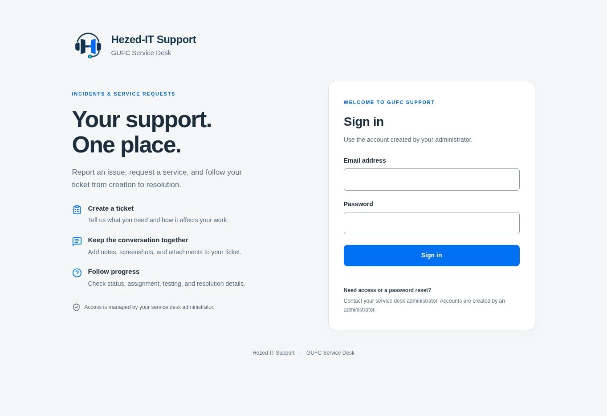

SAP Integration Suite
Connect business processes with Cloud Integration (CPI) and API Management. From interface design and development to monitoring and governance.
At HezedIT, we take a personal approach to every project. We listen, work closely with you and take responsibility for delivering practical solutions that support your business.
Enterprise integration, web development, IT support and digital design — brought together with care and clear communication.
From the systems behind your operations to the website your customers see, we help make technology work together.
SAP integration, custom development and cloud applications.
Connect business processes with Cloud Integration (CPI) and API Management. From interface design and development to monitoring and governance.
Custom SAP development for business requirements, including reports, enhancements, interfaces and application logic.
Build custom applications and services on SAP Business Technology Platform using the Cloud Application Programming Model.
Web applications, IT support and digital design for your business.
Purposeful websites, dashboards and business portals that make information accessible and everyday work easier.
Offshore IT support for SAP technical needs, application troubleshooting and basic day-to-day IT support, with clear communication throughout.
Clear visual identities and thoughtful digital layouts. Design that brings your ideas to life and helps people find their way.
Connect MES, SAP and Microsoft Dynamics 365 so information can move across manufacturing, finance and business operations.
Discuss your integration ↗Integration across Logistics, Finance, Master Data, Production, HR and other SAP modules.
Connecting processes across your SAP landscapeConnect MES with SAP to exchange process orders, master data and other manufacturing interfaces.
Linking production with enterprise operationsConnect customer creation, vendor creation and sales order creation through standard Dynamics 365 APIs.
Standard APIs for connected business processesCustom web applications for small and medium-sized companies. End-to-end development, from frontend UI to backend databases, with hosting options on Azure and similar providers.
From the first screen to the deployed solutionA look at our project portfolio, from business applications to independent and local projects.

A featured business application in the Hezed IT portfolio.
Visit support portal ↗Project-based technical and digital work through Upwork.
Ask about project experience ↗Local project work in the Philippines.
Talk about a local project ↗Understand your business, current systems and the challenge you want to solve.
Agree on an approach, develop the solution and validate it against your requirements.
Plan the handover, clarify support needs and identify useful next steps.